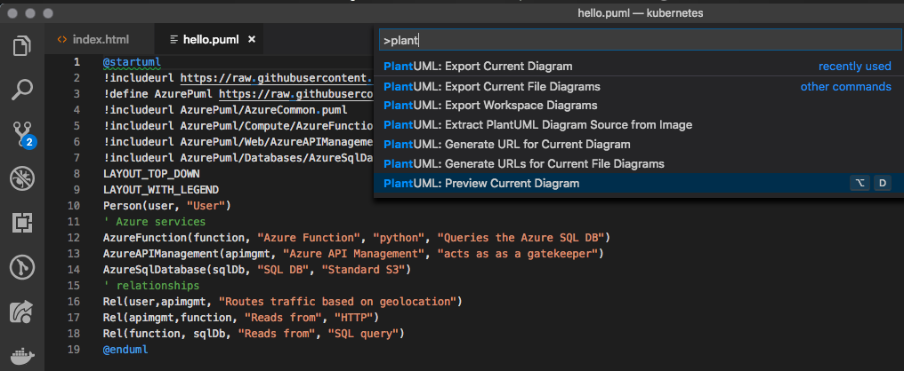

name: inverse layout: true class: center, middle, inverse --- # Brownbag - ## Using Azure-PlantUML for better diagrams [Diego Casati - Microsoft - OCP Canada] --- template:inverse ## The State of Cloud Solution Architecture --- template:inverse layout: false .left-column[ ## Current State ] .right-column[ # The State of Cloud Solution Architecture .left[ > "If someone wants to communicate or to discuss a Cloud Solution Architecture these days, you will not > get a lot of implementation details." > > "You’ll likely get a .red[confused mess of nice symbols, boxes and lines]. Including inconsistent notations with > colours, shapes, line styles, ambiguous naming, unlabelled relationships, .red[generic terminology]. > -- <cite>Ricardo Niepel</cite> <br> > <cite>https://azure-development.com/2018/09/11/save-the-world-from-powerpoint-cloud-solution-architects/</cite> ] ] --- .left-column[ ## Current State ] ## Essentially, getting us from here ... [Improve scalability in an Azure web application ](https://docs.microsoft.com/en-us/azure/architecture/reference-architectures/app-service-web-app/scalable-web-app) --- .left-column[ ## Current State ] ## to here --- .left-column[ ## Current State ] ## using this .left[ ``` @startuml !includeurl https://raw.githubusercontent.com/RicardoNiepel/C4-PlantUML/master/C4_Container.puml !define AzurePuml https://raw.githubusercontent.com/RicardoNiepel/Azure-PlantUML/master/dist !includeurl AzurePuml/AzureCommon.puml !includeurl AzurePuml/Web/AzureCDN.puml !includeurl AzurePuml/Web/AzureSearch.puml !includeurl AzurePuml/Storage/AzureBlobStorage.puml Person(user, "User") Container(spa, "Single-Page App", "Angular, JS") AzureWebApp(webApp, "Web & API App", "ASP.NET Core MVC 2.1, C#", "Delivers the SPA and provides RESTful web APIs which are consumed from the SPA") AzureCDN(cdn, "CDN", "Akamai S2", "caches publicly available content for lower latency and faster delivery of content") AzureBlobStorage(staticBlobStorage, "Static Content", "General Purpose v2, Hot, LRS") AzureQueueStorage(queue, "Queue", "General Purpose v2, LRS") Rel(user, spa, "Uses", "HTTPS") Rel(user, webApp, "Uses", "HTTPS") Rel(user, cdn, "Uses", "HTTPS") @enduml ``` ] --- .left-column[ ## Current State ## C4: What is it? ] .right-column[ ## Introducing the C4 model for software architecture .left[ C4 = Context, Containers, Components and Code In a nutshell: > "The C4 model is an "abstraction-first" approach to diagramming software architecture, based upon abstractions > that reflect how software architects and developers think about and build software."" <br> > <cite>https://c4model.com</cite> To illustrate, let's see an example ] ] --- .left-column[ ## Current State ## C4: What is it? ] ## Context <img src="images/bigbankplc-SystemContext.png" alt="context" width="600"/> --- .left-column[ ## Current State ## C4: What is it? ] ## Container <img src="images/bigbankplc-Containers.png" alt="container" width="600"/> --- .left-column[ ## Current State ## C4: What is it? ] ## Components <img src="images/bigbankplc-Components.png" alt="components" width="600"/> --- .left-column[ ## Current State ## C4: What is it? ] ## Code <img src="images/bigbankplc-Classes.png" alt="code" width="600"/> --- .left-column[ ## Current State ## C4: What is it? ## Azure-PlantUML ] ## Enter Azure-PlantUML <img src="images/azure-PlantUML.png" alt="azure-PlantUML" width="600"> [Ricardo Niepel's Azure-PlantUML](https://github.com/RicardoNiepel/Azure-PlantUML) --- .left-column[ ## Current State ## C4: What is it? ## Azure-PlantUML ] ## Available Azure symbols [Click here for the full list of available symbols](https://github.com/RicardoNiepel/Azure-PlantUML/blob/master/AzureSymbols.md#azure-symbols) --- # Demo: VS Code --- # How do can I use it ? --- .left-column[ ## Current State ## C4: What is it? ## Azure-PlantUML ## Getting started ] .right-column[ .left[ The tools: 1. VS Code with the PlantUML extension  1. [Graphviz](https://graphviz.gitlab.io) 1. Copy one of the examples from: https://github.com/RicardoNiepel/Azure-PlantUML ] ] --- .left-column[ ## Current State ## C4: What is it? ## Azure-PlantUML ## Getting started ] ## Hello World - Azure Functions .right-column[ .left[ Create a `.puml` file and add the following: ``` @startuml !includeurl https://raw.githubusercontent.com/RicardoNiepel/C4-PlantUML/master/C4_Container.puml !define AzurePuml https://raw.githubusercontent.com/RicardoNiepel/Azure-PlantUML/master/dist !includeurl AzurePuml/AzureCommon.puml !includeurl AzurePuml/Compute/AzureFunction.puml !includeurl AzurePuml/Web/AzureAPIManagement.puml !includeurl AzurePuml/Databases/AzureSqlDatabase.puml LAYOUT_TOP_DOWN LAYOUT_WITH_LEGEND Person(user, "User") ' Azure services AzureFunction(function, "Azure Function", "python", "Queries the Azure SQL DB") AzureAPIManagement(apimgmt, "Azure API Management", "acts as as a gatekeeper") AzureSqlDatabase(sqlDb, "SQL DB", "Standard S3") ' relationships Rel(user,apimgmt, "Routes traffic based on geolocation") Rel(apimgmt,function, "Reads from", "HTTP") Rel(function, sqlDb, "Reads from", "SQL query") @enduml ``` ] ] --- .left-column[ ## Current State ## C4: What is it? ## Azure-PlantUML ## Getting started ## Hello World ] ## Hello World - Azure Functions .right-column[  ] --- .left-column[ ## Current State ## C4: What is it? ## Azure-PlantUML ## Getting started ## Hello World ] # Hello World - Azure Functions .right-column[ ] --- ## Thanks [Ricardo Niepel](https://github.com/RicardoNiepel) for a fantastic work and for raising the bar ! --- name: last-page template: inverse ## Let's keep in touch: ### .white[twitter: [diegocasati](http://twitter.com/diegocasati/)] ### https://github.com/dcasati/better-diagrams/